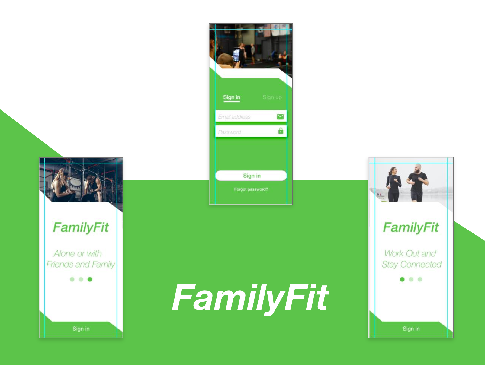
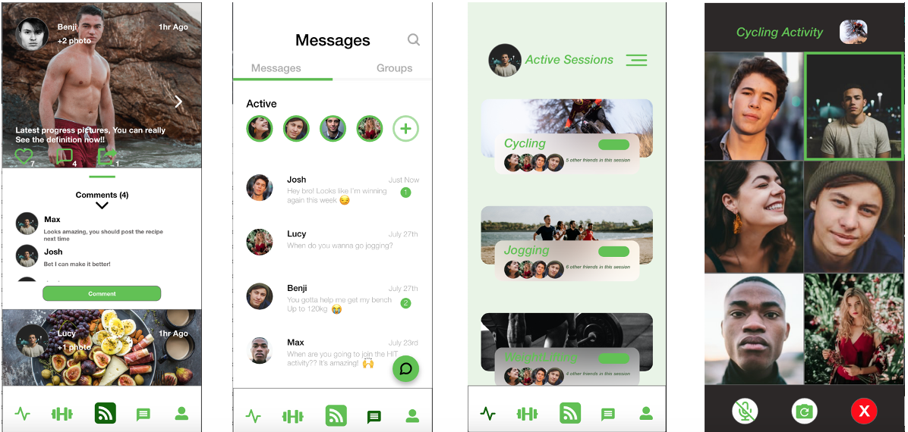
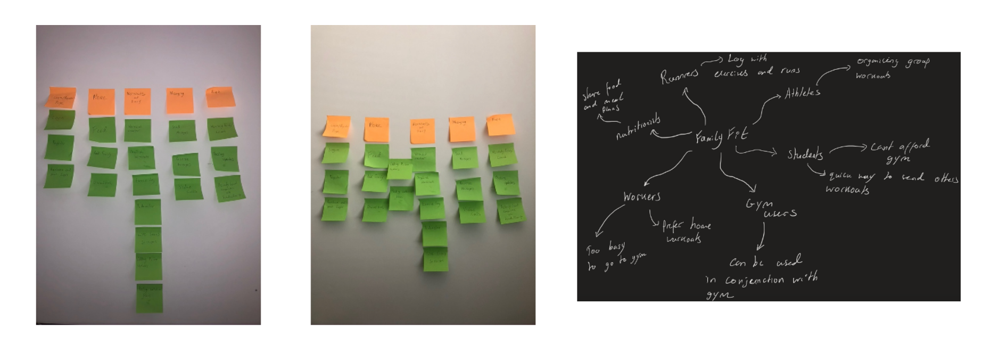
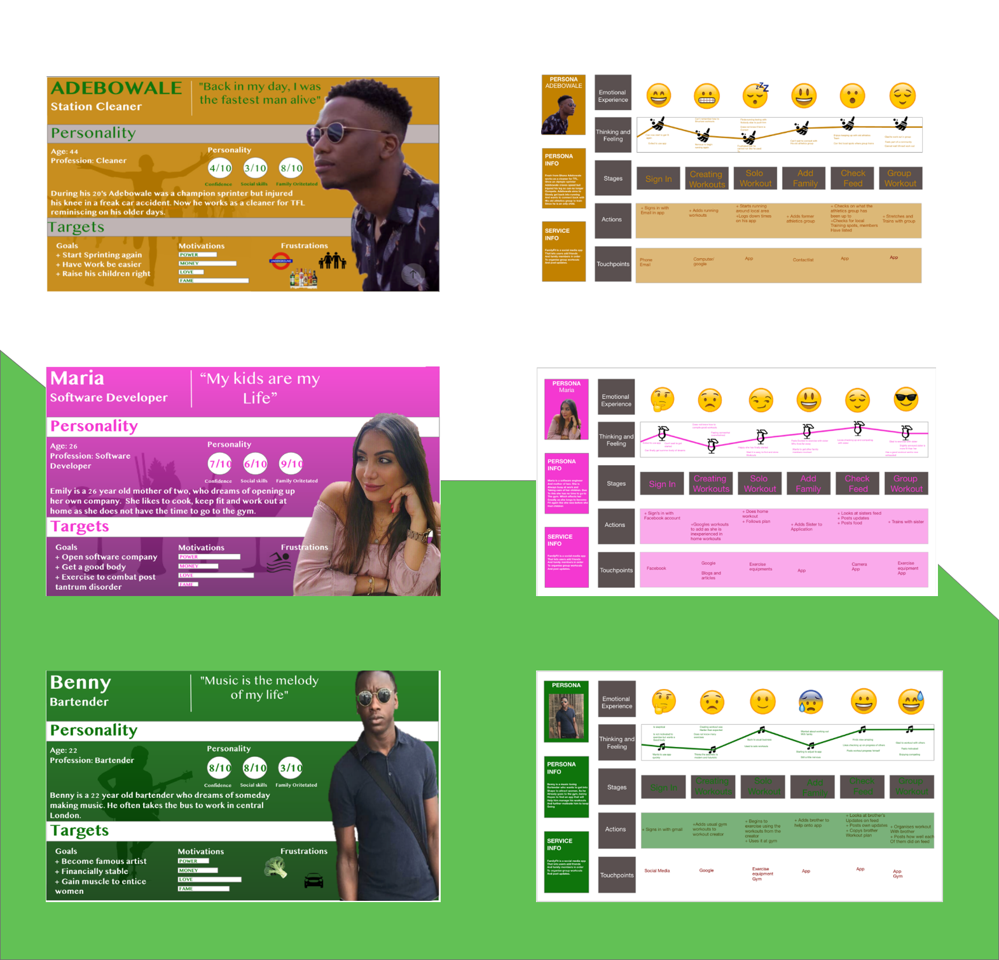
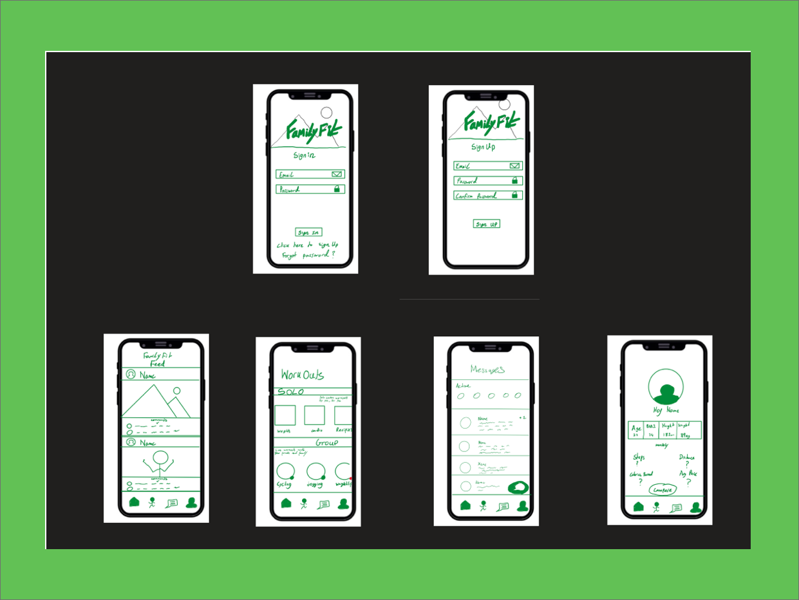
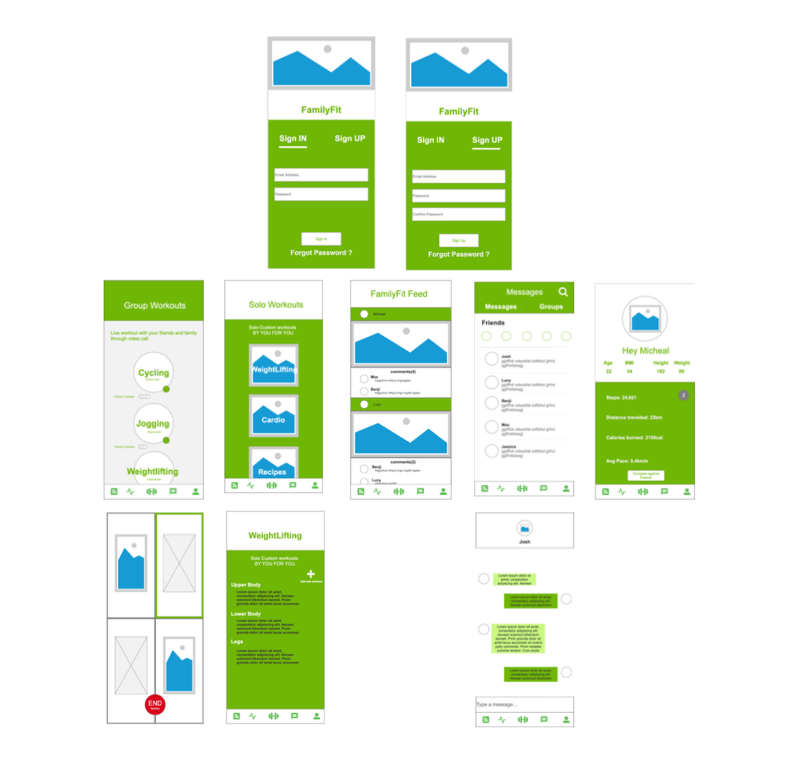
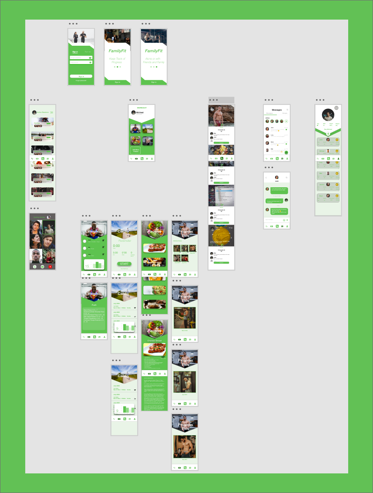

Track Together
Created on Adobe XD, FamilyFit is another take on how i would develop a fitness application. For FamilyFit, more UX/UI elements were taken into account while designing the application. Research was conducted in order to find features and traits that incentivised users to workout over long periods of time. From this UX elements such as Card sorting, User maps, Graphical Personas Personas and Customer Journey maps were utilised to gain a better understanding of the target audience and see what design would best appeal to them. Next several UI prototypes were developed with increasing fidelity until the final product was created on Adobe XD. With the ability to create custom workouts, join in on online workouts and communicate with friends via chat and messenger, working out has never been so socialble.
To begin the development of FamilyFit, UX techniques such as card sorting and mind mapping were used to get a strong idea of what features should be included.
Following this, personas were developed along with customer journey maps and were put through scenarios to see how different people could react to the service and how the service could be adapted to please them.
From this, various prototypes of the application were made. The first a paper prototype was a paper prototype sketch using an iPad onto digital iPhone templates. This would be the basis for all further designs.
Next was the digital prototype that expanded the pages and features shown in the paper prototype.
Finally the final prototype was created using Adobe XD. The prototype is a high fidelity model that works and transitions perfectly. In the future i look to expand upon this by programming FamilyFit into a fully functioning application.
